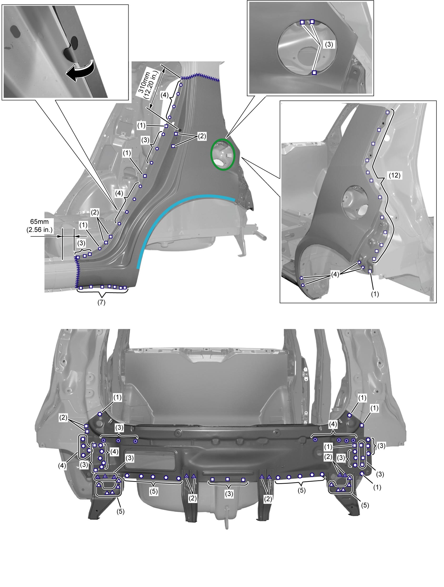
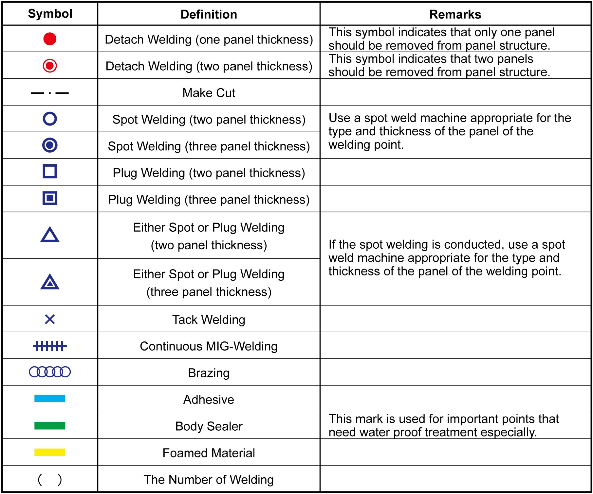

9K
| Body Repair Description |
NOTE:
Body repair work consists of “diagnosis, removal, installation and replacement” of body parts and “rustproofing” etc.
•Use SUZUKI genuine service parts and materials and follow repair instructions in this manual to ensure repair quality. Body repair work should be performed by qualified technicians.
•This manual does not describe most of panel repair works as cutting, drilling and welding and frame corrections. Refer to the SUZUKI body repair training DVD for such technics.
•Be noted that most of important information are inserted as symbols into every illustration. The following description of symbol definitions is essential for the body repair procedures.
•Most of repair procedures are described on the left side of the vehicle. Most parts of the vehicle are almost symmetrical in the welding spots. A separate repair procedure for the right side is shown only if the construction or welding spots are significantly different.
•Refer to the following for plastic parts and sealer application area.
•This manual does not describe most of panel repair works as cutting, drilling and welding and frame corrections. Refer to the SUZUKI body repair training DVD for such technics.
•Be noted that most of important information are inserted as symbols into every illustration. The following description of symbol definitions is essential for the body repair procedures.
•Most of repair procedures are described on the left side of the vehicle. Most parts of the vehicle are almost symmetrical in the welding spots. A separate repair procedure for the right side is shown only if the construction or welding spots are significantly different.
•Refer to the following for plastic parts and sealer application area.
Symbols

 "Expand image")

 "Expand image")